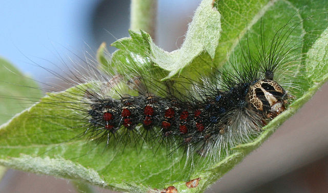
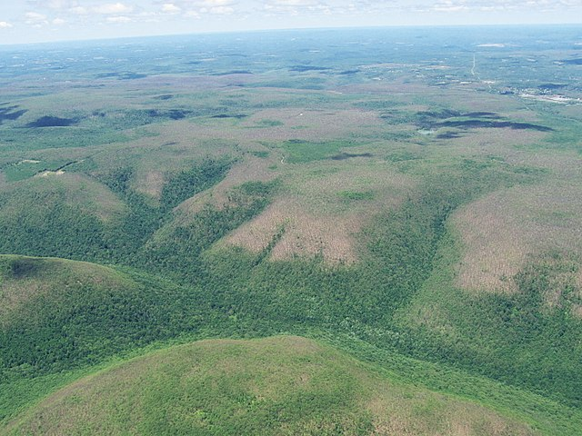
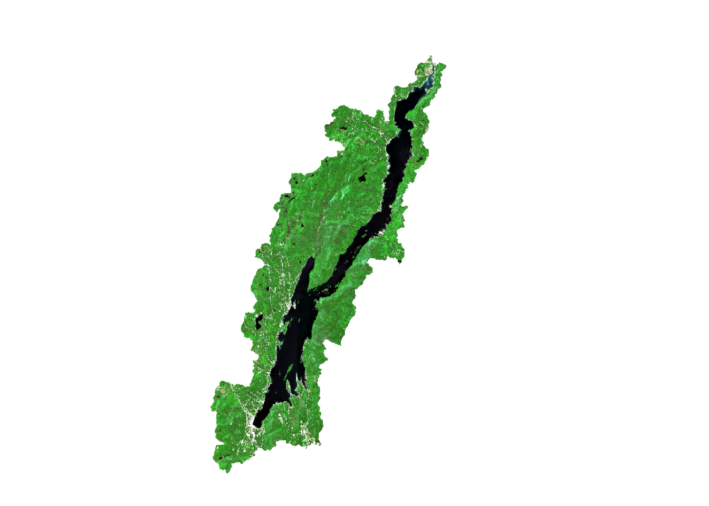
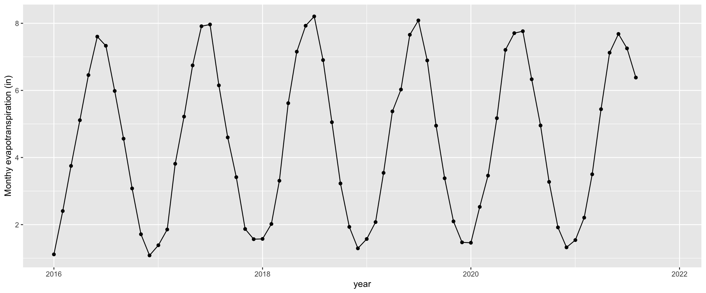
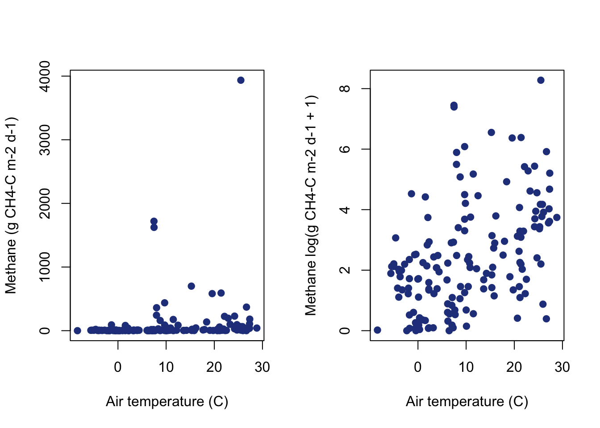
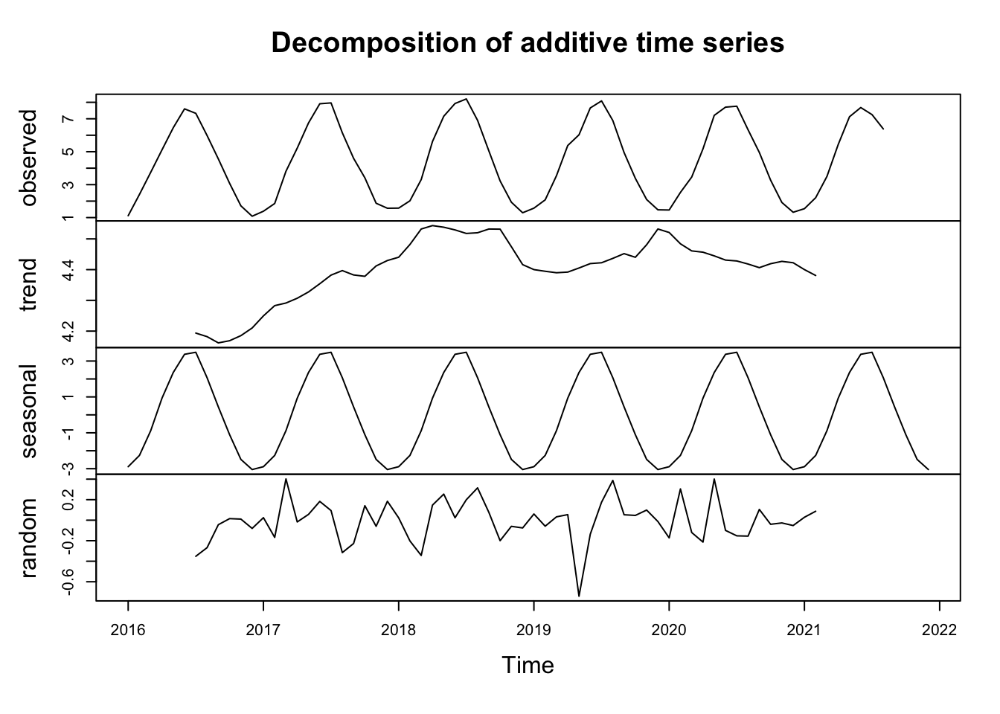
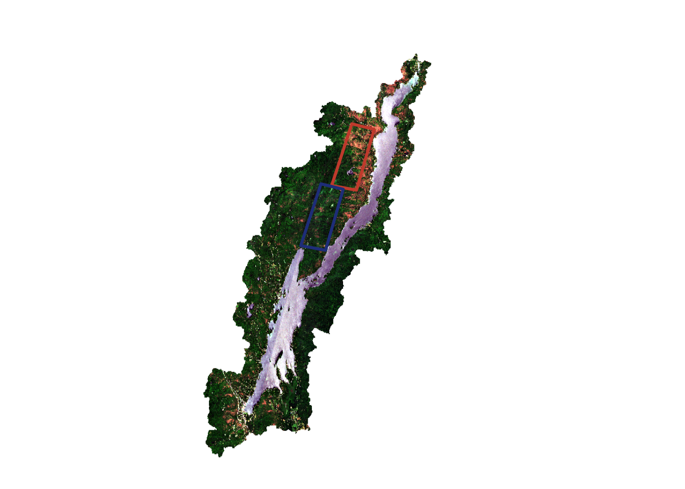
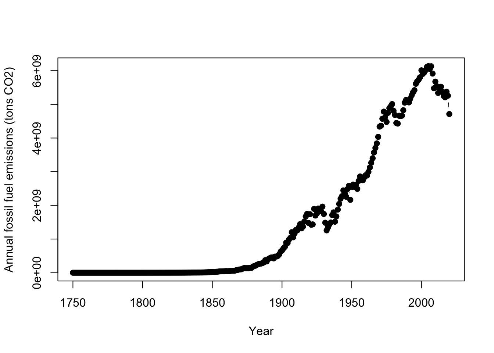
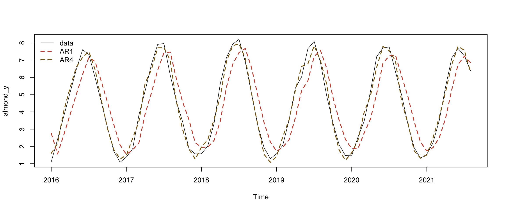
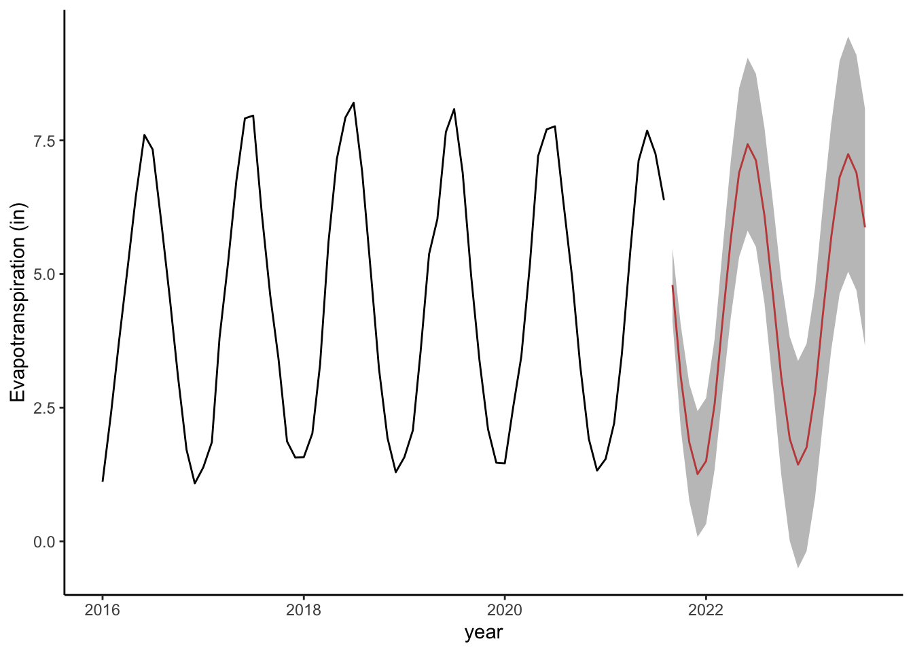

Chapter 8 Tracking bugs from space?!?! An introduction to spatial data in R
by Heather Kropp for ENVST 325: Introduction to Environmental Data Science Hamilton College
8.1 Learning objectives
- Work with raster and vector data in R
- Calcualte NDVI
- Track spongy moth defioliation with satellite data
8.3 The problem: monitoring pest outbreaks
Throughout much of the world, insect and fungal pests can be a common disturbance to forests resulting in outcomes like defoliation and death. The spongy moth ( Lymantria dispar dispar) is a common pest to the northeastern United states that infests forests and eats the leaf foliage. According the the New York State Department of Environmental Conservation, spongy moths were introduced to the US in the 1800s via a silkworm breeding program.

Source:A Spongy moth consumes leaves. Patrick Reijnders CC3
Large outbreaks can defoliate entire forest stands. Deciduous tree leaves can regrow within the summer. This means that the outbreaks are mostly harmless, but successive years of outbreak or outbreaks co-occurring with other stresses like drought may lead to mortality. Outbreaks can also make trees more susceptible to other pests. Evergreen needleleaf trees may have more difficulty regrowing leaves and can be more susceptible to mortality. The installation of barriers and insecticides can help control spongy moth outbreaks. Tracking outbreaks can help inform forest monitoring and multiple sequential years of outbreaks may suggest spongy moth control measures may be warranted. As you can see from the image below, outbreaks can cover large areas of land that can be difficult to quantify from the ground.

An aerial image of spongy moth defoliation in Pennsylvania. Source: Dhalusa CC3
8.4 The data:
8.4.1 Raster data: Sentinel 2 imagery
Changes in vegetation over large spatial extents can be quantified from satellite imagery. As discussed in class, the reflectance of light in different wavelengths can be used characterize vegetation, water and other features on the land surface. In this activity, you will work with data from the Sentinel 2 satellite. You will work with Bands 2 (blue), 3 (green), 4 (red), and 8 (near-infrared). A lot of satellite image data is stored in a GeoTiff format. This format stores the data as an image with additional metadata in the file and includes the geographic information. The raster package can be used to read, analyze, and map these images. The sf package contains functions for working with vector data. Let’s load the packages into the environment:
terra 1.7.78
Attaching package: 'terra'The following objects are masked from 'package:imager':
depth, widthThe following objects are masked from 'package:magrittr':
extract, insetEach image can actually contain multiple images organized in a rast. Here, each tiff file contains four images from each band so you will want to read in the file using the `rast`` function. In the summer of 2021, a major spongy moth outbreak occurred around Lake George in New York State. There is a pre- and post- outbreak image. Let’s read the images in:


You can view the components of the stack using the plot function and set a greyscale using col and grey. You can see each band plotted:

Sentinel 2 data is represented as a digital number where the actual reflectance is multiplied by 10,000 for each band. Since we are only working with sentinel data, we don’t need to convert to an actual reflectance value (0-1 scale).
You can also make a color composite using the plotRGB function. By changing the bands, you can make the false color composites. The plotRGB function uses three bands to make a composite of red, green, blue color in an image. The scale argument specifies the maximum data value (255 will be assumed by default because that is a common value for image data). Color contrast can also be added using the stretch argument.
par(mfrow=c(1,2))
plotRGB(post, r=3,g=2,b=1, # image and bands
scale=13000, # note high scale due to clouds
stretch="lin", # contrast stretch
main="True color",
axes=TRUE)
plotRGB(post, r=4,g=3,b=2, # image and bands
scale=13000,# max data value
stretch="lin", # contrast stretch
main="False color",
axes=TRUE)
8.4.2 Vector data:
You have been given two areas around Lake George towards the North of the lake and in the central region of the lake to track outbreaks. You would like to use these boundaries in your calculations:
The terra package also works with vector data. This includes points, polygons, and lines with attribute table data. The vect function loads the data into R:
northBound <- vect("/cloud/project/activity07/north_bound.shp")
midBound <- vect("/cloud/project/activity07/mid_bound.shp")You can add these polygons to your plot by specifically referring the the geometry column and using the add=TRUE argument. Here the plot function defaluts to an sf plot. You can also find more arguments like fill for working with polygons:
plotRGB(post, r=3,g=2,b=1, stretch="lin")
plot(northBound, border="tomato3", fill=NA, lwd=3, add=TRUE)Warning in graphics::plot.xy(g, type = "l", lty = lty, col = col, lwd = lwd, :
"fill" is not a graphical parameterWarning in graphics::plot.xy(g, type = "l", lty = lty, col = col, lwd = lwd, :
"fill" is not a graphical parameter
8.5 The approach: NDVI in R
8.5.1 NDVI calculations
Calculations on rasters will be very familar in R. You can directly apply functions and calculations to a raster cell just like you are used with vectors and data frames. If you remember, the Normalized Difference Vegetation Index is calculated based on the normalized difference between near infrared and red reflectance. Values of -1 represent water, values of 0 are a non-vegetated surface, and values of 1 are areas of high levels of photosynthesizing vegetation. You can refer to individual bands in a raster stack using double brackets [[]]
You can calculate the NDVI for each raster:
#calculate NDVI pre from NIR (4th band) and Red (3rd band)
ndvi_pre <- (pre[[4]]-pre[[3]])/(pre[[4]]+pre[[3]])
#calculate NDVI post
ndvi_post <- (post[[4]]-post[[3]])/(post[[4]]+post[[3]])
par(mfrow=c(1,2))
plot(ndvi_pre)
plot(ndvi_post)
You can see the drop in NDVI after the outbreak. We can specifically calculate the difference:

8.5.2 Extract data in a vector geometry
You can extract the raster values that fall within a vector geometry. The value of every pixel that overlaps with the geometry will be returned. Let’s extract the NDVI values pre and post for the two polygons. The extract function will pull data from out all raster cells that overlaps. When data is extracted from points, you will get a data frame. When data is extracted from lines or polygons, you get a vector stored in a list for each feature. A list is a very flexible type of object and it can store multiple items that are different R objects (for example, both a vector and data frame). Here we only have one polygon in our data frame so we can directly refer to the vector using the [[1]] syntax.
# return a vector of cell values from the first polygon
ndvi_North <- extract(ndviDiff,northBound)
# return a vector of cell values from the first polygon
ndvi_Mid <- extract(ndviDiff,midBound)Let’s use ggplot to visualize the data. Let’s make a data frame for the two vectors that will integrate with ggplot. You can use the rep function to repeat a value. Here it would be helpful to repeat the name of the boundary. The first argument is the data you want to repeat and the second argument is the number of times to repeat it:
ndviDataframe <- data.frame(location=c(rep("North", length(ndvi_North[,2])),
rep("Mid", length(ndvi_Mid[,2]))),
ndvi.diff =c(ndvi_North[,2],ndvi_Mid[,2]))Let’s look at the change in the ndvi. We will ignore outliers here since there are occasionally numerical artifacts from calculating ndvi differences over water or the build environment:
ggplot(data=ndviDataframe,
aes(x=location,ndvi.diff))+
geom_boxplot(outlier.shape = NA)+
ylim(-0.5,0.5)Warning: Removed 7020 rows containing non-finite outside the scale range
(`stat_boxplot()`).
8.6 Conclusions
In 2021, you can see that the spongy moth defoliated much of the immediate area around Lake George. Areas in the north and the south of the lake were hit harder. A boundary of interest at the north of the lake was hit harder than a boundary near the central part of the lake.
8.7 Citations
NYS DEC. Spongy moth. https://www.dec.ny.gov/animals/83118.html
Data made available by Charles Bettigole at Skidmore College.